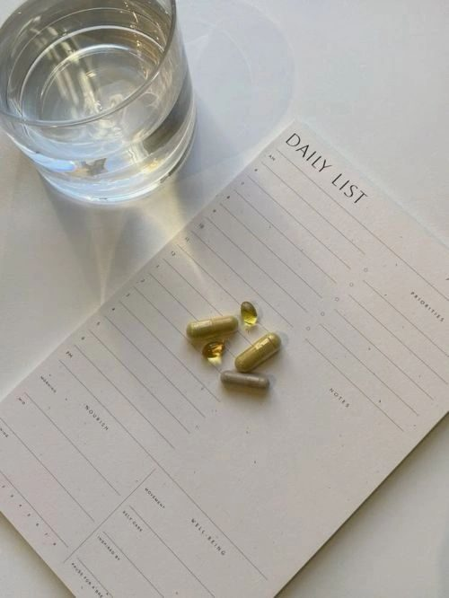

If you’re a woman over 30 and you’ve been feeling off — a little flat in energy, mood swings, hormonal quirks, or just like something behind the scenes is tugging at your vitality — you’re not alone.
As we move through our 30s, 40s, and beyond, our bodies begin to navigate shifts in hormones, stress, lifestyle demands, and cellular wear and tear. What often sneaks in quietly are nutrient gaps — essential vitamins and minerals that the body needs right now to keep hormones balanced, energy high, and mood steady.
But here’s the kicker: many of us are walking around with low levels of key nutrients without even realizing it, and that deficiency can ripple into hormone imbalances, fatigue, sluggish recovery, and “off” moods.
One study found that in a group of women with prediabetes and low vitamin D, adding both omega-3s and vitamin D improved mood, anxiety, and sleep quality (source). Another review revealed that iron deficiency is particularly prevalent in premenopausal women, affecting 15–50% depending on menstrual and activity levels (source). And research shows that women are also more prone to magnesium deficiency, especially during times of hormonal fluctuation and chronic stress (source).
Why does this matter for you? Because nutrients like omega-3, iron, vitamin D3, calcium, B vitamins, and magnesium don’t just support general health — they’re directly involved in hormone production, mood regulation, energy metabolism, and stress recovery.
Let’s dive into how each of these nutrients affects your body — and why replenishing them can make you feel like yourself again.
1. Omega-3 Fatty Acids
Omega-3s are healthy fats found in wild-caught fish, flaxseeds, and chia seeds — but most women aren’t getting enough.
Why we’re deficient:
- Diets high in processed oils (omega-6s) and low in fish.
- Chronic stress increases inflammation, which can deplete omega-3s more quickly.
- Vegetarian or low-fat diets often miss key sources of EPA and DHA.
Why it matters for women:
- Regulates hormone production and reduces PMS symptoms.
- Supports mood and brain health — studies show omega-3s can reduce symptoms of depression and anxiety in women (source).
- Improves skin barrier function and reduces inflammation linked to acne and aging.
Pro tip: Look for a high-quality fish oil or algae-based omega-3 supplement containing both EPA and DHA.
2. Iron
Iron helps transport oxygen through your blood — and when you’re low, your energy plummets.
Why we’re deficient:
- Heavy menstrual cycles.
- Plant-based diets with low heme iron.
- Gut imbalances that affect absorption.
Why it matters for women:
Low iron can cause fatigue, hair loss, brain fog, and hormonal imbalances. It’s also been linked to low thyroid function and decreased mood.
A 2022 review found that iron deficiency anemia significantly contributes to fatigue and poor cognitive performance in women of reproductive age (source).
Pro tip: Pair iron-rich foods (like grass-fed beef, lentils, and spinach) with vitamin C sources (like lemon or bell peppers) to boost absorption.
3. Vitamin D3
Vitamin D acts more like a hormone than a vitamin — and most women are low in it.
Why we’re deficient:
- Limited sun exposure and sunscreen use.
- Poor absorption from gut or liver issues.
- Spending most of our time indoors.
Why it matters for women:
- Regulates estrogen and progesterone balance.
- Boosts mood and supports serotonin production.
- Enhances calcium absorption and immune health.
Research links low vitamin D levels with PMS, infertility, and depression in women (source). Another study found that restoring vitamin D levels can improve menstrual regularity and insulin sensitivity (source).
Pro tip: Get your vitamin D levels tested. The optimal range for hormonal health is usually higher than what’s considered “normal.”
4. Calcium
Calcium isn’t just about bones — it’s also critical for muscle contraction, nerve signaling, and hormone release.
Why we’re deficient:
- Avoiding dairy without replacing it.
- Vitamin D deficiency limits absorption.
- Estrogen decline during perimenopause and menopause.
Why it matters for women:
- Helps regulate the menstrual cycle and supports bone density.
- Works with magnesium and vitamin D for muscle recovery and hormone signaling.
- Supports mood and sleep quality.
A 2019 study found that calcium supplementation in perimenopausal women helped reduce mood swings and sleep disturbances (source).
Pro tip: Choose food-based sources like sardines, sesame seeds, or leafy greens.
5. Vitamin B Complex
Your B vitamins — especially B6, B9 (folate), and B12 — are the spark plugs for your metabolism and energy.
Why we’re deficient:
- Chronic stress depletes B vitamins quickly.
- Birth control pills reduce levels of B6, B9, and B12.
- Poor gut health and restrictive diets.
Why it matters for women:
- B6 supports progesterone and helps ease PMS symptoms.
- B12 and folate are key for brain health, mood, and fertility.
- Deficiency leads to fatigue, anxiety, and poor sleep.
A 2016 study found that B-vitamin supplementation improved energy, mood, and cognitive performance in women under high stress (source).
Pro tip: A methylated B-complex supplement ensures your body can effectively absorb and utilize these vitamins.
6. Magnesium
Magnesium is often called the calming mineral — and most women don’t get enough.
Why we’re deficient:
- Soil depletion = fewer minerals in our food.
- High caffeine, sugar, and stress levels.
- Hormonal changes increase the body’s need for magnesium.
Why it matters for women:
- Supports better sleep and calms the nervous system.
- Reduces PMS, cramps, and bloating.
- Regulates cortisol, blood sugar, and thyroid function.
Clinical research shows that magnesium supplementation, particularly in combination with vitamin B6, can effectively ease premenstrual symptoms and anxiety by supporting neurotransmitter balance and reducing inflammation (source).
Pro tip: Magnesium glycinate supports relaxation and sleep, while magnesium citrate aids digestion.
Deficiencies in these nutrients often overlap — and they all impact each other. For example, low magnesium can reduce vitamin D activity, and low B vitamins can disrupt thyroid and adrenal function.
The result? Fatigue, irritability, irregular cycles, low mood, and hormonal chaos.
But once you start replenishing your body with what it needs — energy returns, skin glows, and mood stabilizes.
If you’re feeling tired, anxious, or not like yourself lately — your body might be trying to tell you something. Nutrient deficiencies are common but reversible, and the changes you make today can transform your hormones and overall vitality.
As an integrative health practitioner, I help women rebalance their hormones, restore energy, and glow from within using a holistic approach.
Book a consultation to uncover your nutrient gaps and create a personalized plan that helps you feel your best again.